Lançamento da Plataforma Digital Educativa
O projeto Guardiãs das Águas apresenta sua nova plataforma digital interativa, desenvolvida para ampliar o alcance da educação ambiental sobre recursos hídricos e saneamento básico em todo o Brasil.
Quiz educativo interativo
Materiais didáticos gratuitos
Projetos das 6 cidades
